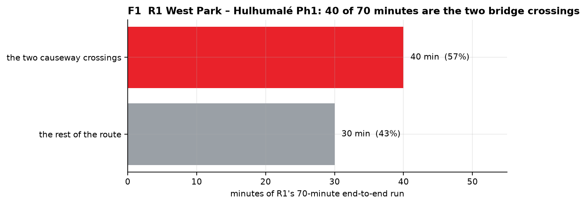
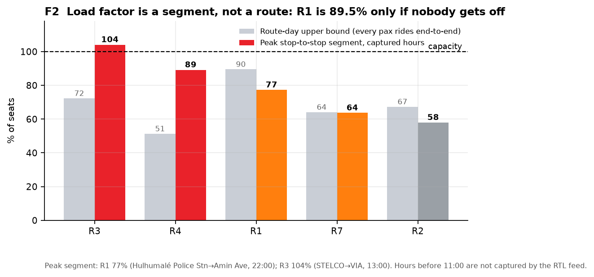
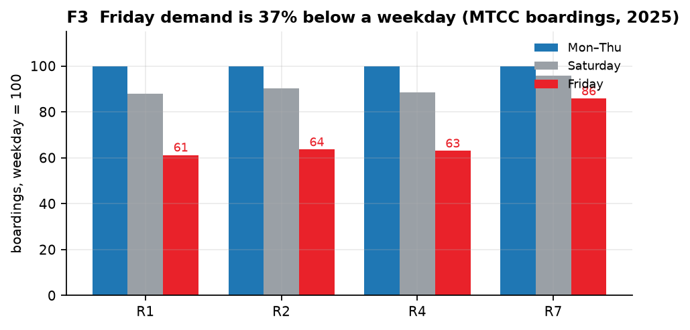
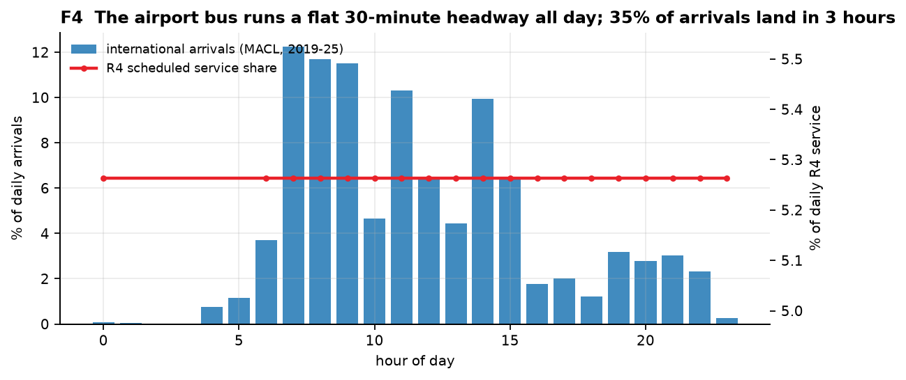
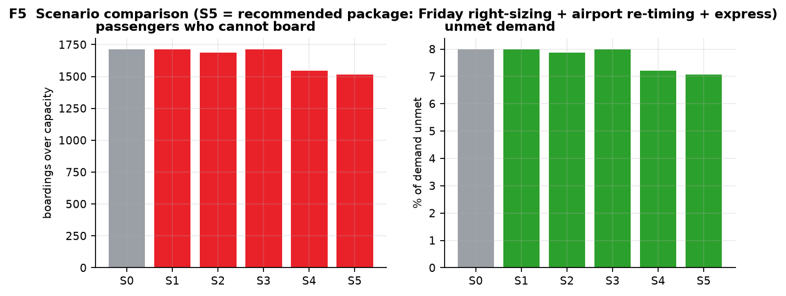
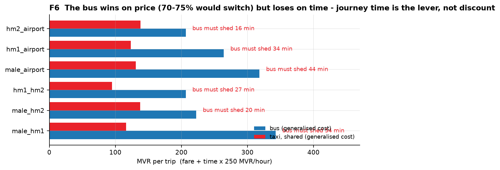

1. Capture Window (11:00–24:00): The official RTL 2026 endpoint returns departures from the moment of the call to midnight on Saturday 2026-10-24. Hours 00:00–10:59 were not in the feed and are rendered as Not captured, never as zero.
2. Load-Factor Band (Avg ↔ Peak): MTCC ridership does not specify whether total_pax is one-direction or two-direction. We report both the upper bound (every passenger rides end-to-end) and the lower bound (uniform alighting).
3. 10 Routes With No Ridership: Only R1, R2, R3, R4, and R7 have MTCC ridership series. Routes R5, R6, R8–R15 are explicitly marked NO DEMAND DATA rather than zero-filled.
4. MACL Airport Coverage: MACL hourly data covers 36.5% of international arrivals and 0% of domestic arrivals (MBS Yearbook 11.13 provides total levels).
| Route | Official Name | Dhivehi | Bus Type & Seats | Demand Data | Service Capture | Load Band (Sat) |
|---|





